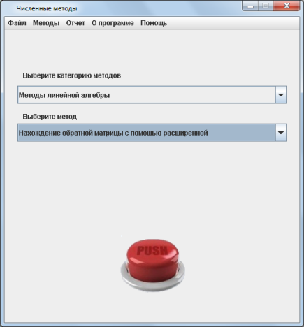
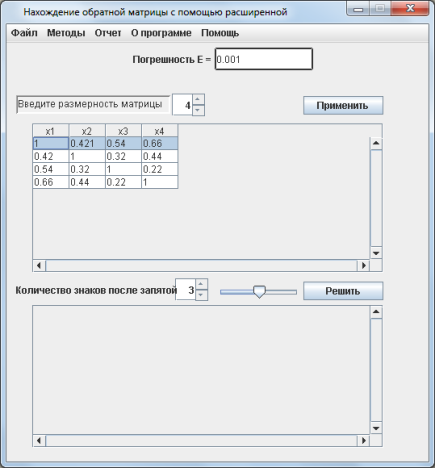
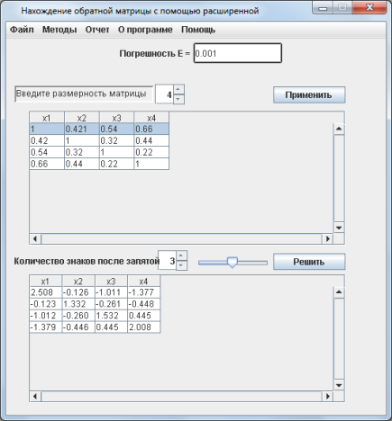
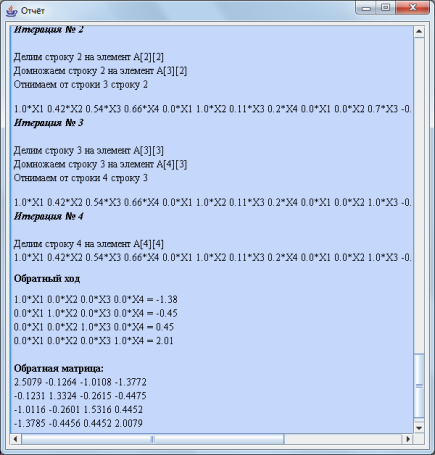

Нахождение обратной матрицы с помощью расширенной
Практическая часть
Теоретическая часть
Если А – невырожденная матрица, то существует единственная обратная матрица A-1 такая, что:
 , где E - единичная матрица.
, где E - единичная матрица.Невырожденной называется матрица, определитель которой не равен 0.
Для того, чтобы обратить матрицу A, построим расширенную матрицу В, приписав справа от матрицы A единичную матрицу Е, такой же размерности что и A. Используя элементарные преобразования над строками, необходимо получить квадратную единичную матрицу Е слева, относительно середины расширенной матрицы В, а квадратная матрица, полученная справа будет обратной матрицей для матрицы A.Практическая часть
Пошаговые действия |
Пояснения к действиям |
|  | 1. Заходим в программу. Появляется окно, показанное на рисунке. Выбираем категорию методов "Методы линейной алгебры" Выбираем метод "Нахождение обратной матрицы с помощью расширенной". Нажимаем кнопку "PUSH". |
|  | 2. Появляется окошко, показнное на рисунке слева. В соответсвующем поле вы задаете размерность матрицы. Также в поле "Погрешность Е" можете задать необходимую точность при решении. После чего необходимо нажать кнопку "Применить". |
|  | 3. После выполнения всех действий, описанных выше, внизу экранной формы будет выведена обратная матрица A-1. |
|  | 4. После того, как вы получили ответ, можно просмотреть отчет, где предоставлено поэтапное решение. Для этого необходимо в главном меню программы, расположенном на верху экранной формы выбрать пункт "Отчет/Просмотр отчета". Вы увидите окно, расположенное слева. Также можно сохранить этот отчет нажав кнопку главного меню "Отчет/Сохранить отчет". |
 |
6. Если решение примера может пригодится вам в будущем, вы можете сохранить его с помощью конпки меню "Файл/Сохранить". В окне, которое появится(оно показано на рисунке слева) необходимо выбрать папку, в которую он сохранится и написать название. |